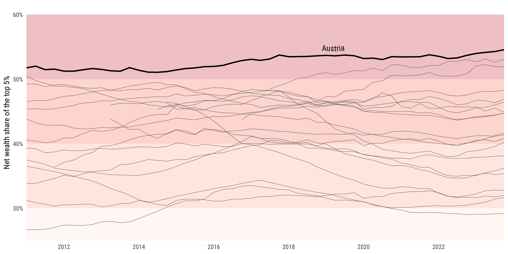
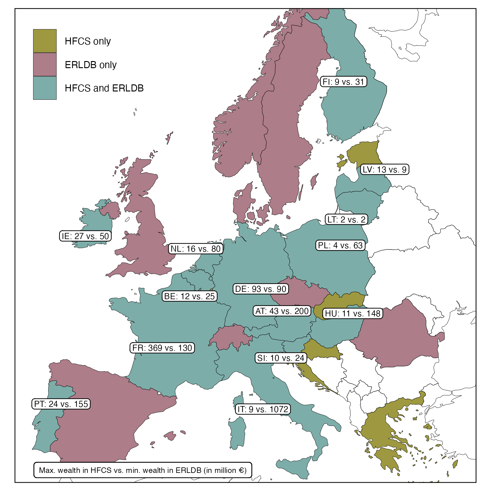
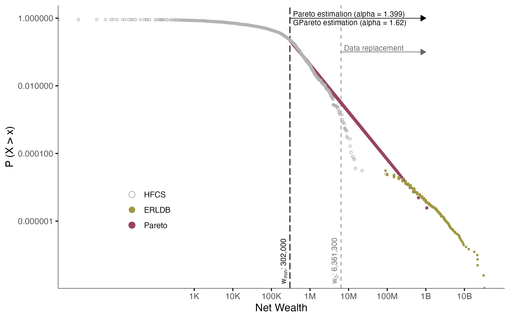
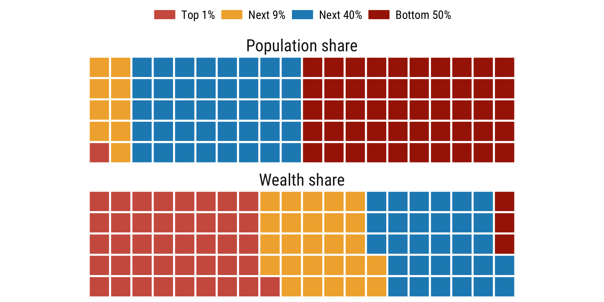
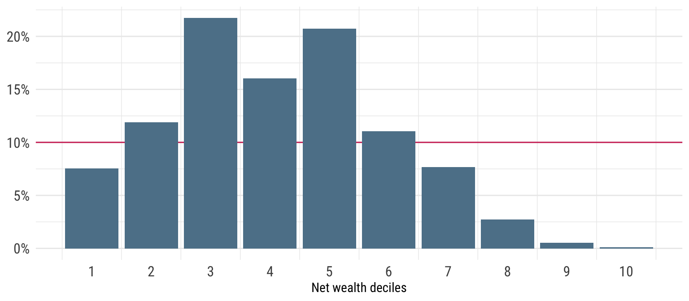
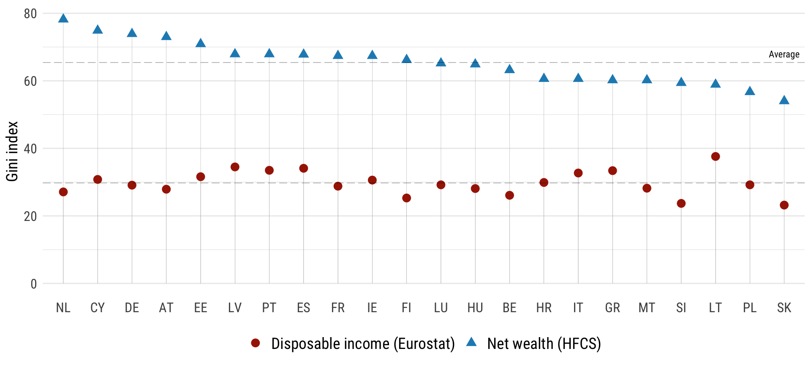
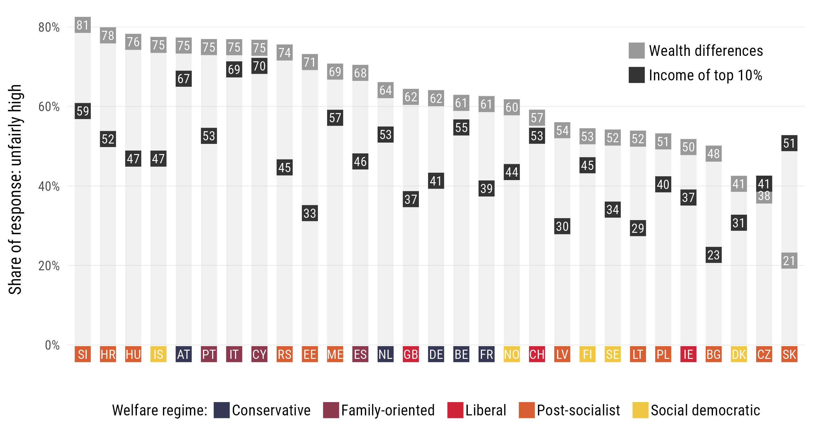
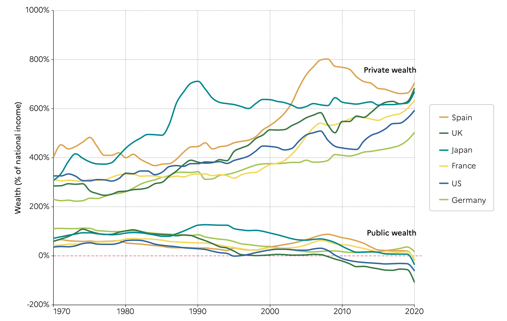
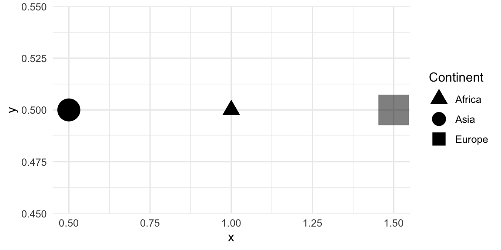

Economic Policy Visualization
Wealth · Scales
Dr. Matthias Schnetzer
November 3, 2025
What is wealth and how do we measure it?
Definition of private wealth
Non-financial assets
- Dwellings (owner-occupied residence, other real estate)
- Consumer durables (vehicles, etc.)
- Valuables
- Intellectual property
Financial assets
- Currency and deposits
- Net equity in own unincorporated business
- Mututal funds and investment funds
- (Private) Pensions funds
- Bonds and other debt securities
- Shares and other equity
- Life insurance funds -Other financial assets
Liabilities
- Owner-occupied residence loans
- Consumer durable loans (e.g. for vehicles)
- Other investment loans (collateralized)
- Other loans (e.g. education loans)
No human, social and cultural capital; No public social security pensions (marketable vs. augmented wealth)
HFCS sampling and underreporting
- Target population in Austria 2021: 4 million households
- Gross sample in HFCS 2021: 6,300 households
- Realized interviews: 2,293 households
- Response rate in HFCS 2021: 39%
- Residual: refused interviews, invalid addresses, households not available, etc.
- Response refusal correlates with wealth and is highest at the top (Vermeulen, 2016)
- Wealthy households own a greater number of assets and miss some components more easily (Kennickell/Woodburn, 1999)
Upstream strategy against underreporting: Oversampling
- Undercoverage and Underreporting
- Oversampling is crucial for wealth surveys
- Oversampling in HFCS 2021: 🇧🇪 🇨🇾 🇩🇪 🇪🇪 🇪🇸 🇮🇹 🇫🇮 🇫🇷 🇬🇷 🇭🇷 🇭🇺 🇮🇪 🇱🇻 🇱🇹 🇱🇺 🇵🇹 🇸🇰
- No oversampling: 🇦🇹 🇨🇿 🇲🇹 🇳🇱 🇸🇮
- How does oversampling work?
- External personal wealth data (🇫🇷 🇪🇸 🇱🇹)
- List of streets with high-income people (🇩🇪)
- Income tax data (🇱🇺 20% of the sample from top 10% earners)
- Regions with higher average income or house prices (🇧🇪 🇬🇷)
- Electricity consumption (🇨🇾)
Downstream strategy against underreporting: Pareto estimation
- Pareto-Distribution is a sensible approximation to the distribution of large wealth
- Two parameters:
- Threshold for “large” wealth \(m\)
- Pareto-Index \(\alpha\)
\[P_i(x_i) = Pr(X_i \leqslant x_i) = 1 - \left(\frac{m_i}{x_i}\right)^{\alpha_i}\] \[\forall ~\text{implicates} ~i = 1...5 \wedge x_i \geqslant m_i\]
A smaller \(\alpha\) means greater inequality. Empirically, \(\alpha\) often is around 1.5 for wealth.
European Rich List Database (ERLDB) and HFCS

Cumulative density function of wealth in Germany

New data source: Distributional wealth accounts (DWA)
Wealth distribution in Austria
Net wealth distribution in Austria

Self-positioning in the wealth distribution

- Correct positioning of households in the richest decile: 0
- Average estimated decile in the richest decile: 6
- Average estimated decile in the poorest decile: 3
Gender wealth gap in Austria
| Mean wealth | Mean GWG (in €) | Mean GWG (in %) | Median Wealth | Median GWG (in €) | Median GWG (in %) | |
|---|---|---|---|---|---|---|
| All respondents | ||||||
| Couples | 356,553 | 173,683 | ||||
| Male | 207,485 | 58,417 | 28 | 82,285 | 13,862 | 17 |
| Female | 149,068 | 68,422 | ||||
| Male respondent | ||||||
| Male | 270,307 | 110,995 | 41.1 | 99,347 | 27,085 | 27.3 |
| Female | 159,312 | 72,262 | ||||
| Female respondent | ||||||
| Male | 138,830 | 957 | 0.7 | 63,825 | −1,395 | -2.2 |
| Female | 137,873 | 65,220 |
Migrant wealth gap in Austria
| Mean wealth | Mean MWG (in €) | Mean MWG (in %) | Median Wealth | Median MWG (in €) | Median MWG (in %) | |
|---|---|---|---|---|---|---|
| Natives | 165,730 | 59,001 | ||||
| Migrants | ||||||
| Total | 98,007 | 67,723 | 41 | 15,931 | 43,070 | 73 |
| 1st generation | 63,001 | 102,729 | 62 | 9,917 | 49,084 | 83 |
| 2nd generation | 139,775 | 25,955 | 16 | 32,763 | 26,238 | 44 |
| 1st generation migrants only | ||||||
| Short stay | 39,598 | 126,132 | 76 | 4,935 | 54,066 | 92 |
| Long stay | 86,317 | 79,413 | 48 | 20,196 | 38,805 | 66 |
Perceptions of wealth inequality
Income and wealth inequality across Europe

Perceptions of fairness in wealth disparities

Private-public wealth gap

Scales
Axes
Continuous
Dates
Others
scale_x_discrete(), scale_x_log10(), scale_x_reverse(), scale_x_sqrt(), …
Colors
Manual
Gradient
Brewer
Others
scale_color_binned(), scale_color_distiller(), scale_color_grey(), …
Shape, size and alpha
tribble(~x, ~y, ~significance, ~gdp, ~continent,
0.5, 0.5, "yes", 140, "Asia",
1.0, 0.5, "yes", 100, "Africa",
1.5, 0.5, "no", 250, "Europe") |>
ggplot(aes(x = x, y = y)) +
geom_point(aes(alpha = significance, size = gdp, shape = continent)) +
scale_alpha_discrete(range = c(0.5, 1), guide = guide_none()) +
scale_size_continuous(range = c(5, 12), guide = guide_none()) +
scale_shape_manual(values = c(17, 19, 15),
guide = guide_legend(title = "Continent",
override.aes = list(size = 5))) +
theme_minimal()
Guides
ggplot(aes(x = life_expectancy, y = poverty_rate, color = continent)) +
geom_point() +
scale_color_viridis_d(guide = guide_legend(title.position = "top",
title.theme = element_text(size = 2),
title.hjust = 0, title.vjust = 0.5,
label.position = "bottom",
label.hjust = 0, label.vjust = 0.5,
keywidth = 2, keyheight = 2,
direction = "horizontal",
override.aes = list(size = 4),
nrow = 1, ncol = 4,
byrow = FALSE, reverse = FALSE, ...))| Scale type | Default guide type |
|---|---|
| continuous scales for colour/fill aesthetics | colourbar |
| binned scales for colour/fill aesthetics | coloursteps |
| position scales (continuous, binned and discrete) | axis |
| discrete scales (except position scales) | legend |
| binned scales (except position/colour/fill scales) | bins |
Bibliography
Chancel, Lucas/Piketty, Thomas/Saez, Emmanuel/Zucman, Gabriel (2022). World inequality report 2022. World Inequality Lab.
Disslbacher, Franziska/Ertl, Michael/List, Emanuel/Mokre, Patrick/Schnetzer, Matthias (2020). On top of the top - adjusting wealth distributions using national rich lists (Working Paper Series No. 20). INEQ.
Gabaix, Xavier (2016). Power Laws in Economics: An Introduction. Journal of Economic Perspectives, 30(1), 185–206. DOI: 10.1257/jep.30.1.185
Kennickell, Arthur B./Woodburn, R. Louise (1999). Consistent Weight Design for the 1989, 1992 and 1995 SCFs, and the Distribution of Wealth. Review of Income and Wealth, 45(2), 193–215. DOI: 10.1111/j.1475-4991.1999.tb00328.x
Muckenhuber, Mattias/Rehm, Miriam/Schnetzer, Matthias (2022). A Tale of Integration? The Migrant Wealth Gap in Austria. European Journal of Population, 38(2), 163–190. DOI: 10.1007/s10680-021-09604-1
OECD (2013). OECD guidelines for micro statistics on household wealth. OECD. DOI: 10.1787/9789264194878-en
Rehm, Miriam/Schneebaum, Alyssa/Schuster, Barbara (2022). Intra-Couple Wealth Inequality: What’s Socio-Demographics Got to Do with It? European Journal of Population, 38(4), 681–720. DOI: 10.1007/s10680-022-09633-4
Schnetzer, Matthias/Hofmann, Julia/Marterbauer, Markus (2024). Fairness Perceptions of Wealth Inequality in Europe. Review of Income and Wealth (R&R), 71(3), e70026. DOI: 10.1111/roiw.70026
Vermeulen, Philip (2016). Estimating the Top Tail of the Wealth Distribution. The American Economic Review, 106(5), 646–650. DOI: 10.1257/aer.p20161021

PI 0702 Economic Policy (Applied track) | Winter term 2025